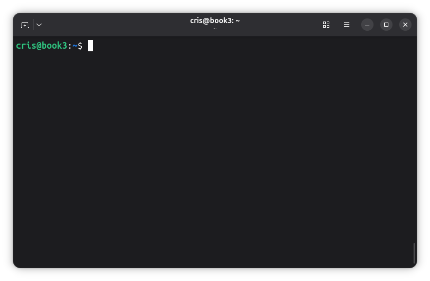

Administración de servidores GNU/Linux
Clase 5: Navegación y operaciones con archivos
Módulo 1 — Primeros pasos en la shell
Temas de clase 5
Objetivos de la clase
Al finalizar esta clase vas a poder:
- Diferenciar una terminal, una shell y un comando.
- Reconocer la estructura básica de una orden de Bash.
- Usar Tab y el historial para trabajar con mayor precisión.
- Recorrer el árbol con rutas absolutas y relativas.
- Crear, copiar, mover, renombrar y eliminar archivos y directorios.
Por qué vemos este tema: ya podemos ingresar al servidor por SSH. Antes de administrar servicios y configuraciones necesitamos aprender a ubicarnos y operar con archivos desde la línea de comandos.
La shell:
La interfaz de administración
Terminal, shell y comando
- Terminal: ventana o dispositivo desde el cual escribimos y vemos resultados.
- Shell: programa que interpreta la línea y decide qué ejecutar.
- Comando: instrucción que ejecuta un programa externo o una función de la shell.
Terminal → Bash → comando → resultado
SSH aporta la conexión; la terminal permite interactuar; Bash interpreta lo que escribimos.

Bash y otras shells
| Shell | Característica |
|---|---|
sh | Shell histórica y referencia para una sintaxis común de scripts. |
| Bash | Bourne Again Shell. Es la que utilizaremos en el curso. |
| Zsh | Orientada al uso interactivo y muy configurable. |
| Fish | Interfaz amigable, con algunas diferencias de sintaxis. |
| Dash | Pequeña y rápida; Debian suele usarla como /bin/sh. |
Los ejemplos del curso estarán escritos para Bash.
echo "$SHELL" # shell configurada para el usuario
bash --version # versión instalada
Cómo se escribe un comando
comando [opciones] [argumentos]
ls -la /var/log
ls: comando.-la: opciones cortas-ly-a./var/log: argumento; en este caso, una ruta.
Las opciones cambian el comportamiento. Los argumentos indican sobre qué objeto trabajar.
Opciones, argumentos y orden
ls -l /etc
ls --format=long /etc
cp origen.txt destino.txt
- Las opciones cortas suelen comenzar con
-; las largas, con--. - No todos los comandos ofrecen las mismas opciones.
- En operaciones con archivos, el orden entre origen y destino importa.
--help, help y man
ls --help # resumen rápido
help cd # orden interna de Bash
man ls # página de manual
man 5 passwd # sección 5 del manual
--help: confirma rápidamente opciones y sintaxis.help: documenta órdenes internas de Bash.man: documentación completa instalada en el sistema.
Dentro de man: Espacio avanza, b retrocede, /texto busca, n repite la búsqueda y q sale.
Manuales en español
sudo apt update
sudo apt install man-db manpages manpages-es
LANG=es_AR.UTF-8 man ls
No todas las páginas están traducidas. Si no existe una versión en español, se utiliza la original.
- Debian Manpages: referencia preferida para versión, paquete e idioma.
- man.cx:
man(1)en español: alternativa rápida con distintas fuentes e idiomas.
Nombres con espacios
mkdir "Documentos del curso"
ls Documentos\ del\ curso
Los espacios separan argumentos. Las comillas o la barra invertida permiten tratarlos como parte del nombre. Su funcionamiento se retomará junto con los comodines.
Para archivos de administración suele ser más práctico usar nombres comodocumentos-cursoodocumentos_curso.
Consultas
Terminal → shell → Bash → opciones y argumentos
Trabajar con la línea:
Tab, historial y limpieza de pantalla
Autocompletado con Tab
cd /etc/sys<Tab>
- Una pulsación completa si existe una única coincidencia.
- Una segunda pulsación muestra las alternativas.
- Completa comandos, archivos, directorios y, cuando están definidas, opciones.
- Reduce errores de tipeo y ayuda a descubrir nombres reales.
Tab evita errores de escritura; no confirma que la operación sea correcta.
Historial de comandos
history
- Flechas arriba y abajo: recorrer órdenes recientes.
- Ctrl + R: buscar hacia atrás por una parte del comando.
- Repetir Ctrl + R: buscar una coincidencia anterior.
- Enter: ejecutar. Flecha: editar. Ctrl + C: cancelar.
El historial persistente se guarda habitualmente en ~/.bash_history.
Limpiar la pantalla
clear
- Ctrl + L: limpia la vista desde el teclado.
- Ambas opciones vuelven a colocar el prompt en la parte superior.
- No borran el historial ni detienen los procesos en ejecución.
Limpiar la pantalla no es lo mismo que limpiar el historial.
Limpiar el historial de Bash
history -c # limpia la lista de esta sesión
history -w # sobrescribe ~/.bash_history
- Cerrar antes las otras sesiones del mismo usuario.
- Limpiar por separado el historial de root, si se utilizó.
- Útil antes de convertir una VM en plantilla.
No elimina logs ni prepara por sí solo una plantilla segura. Los logs son parte de la auditoría.
Consultas
Tab → historial → Ctrl + R → clear / Ctrl + L
Navegación y rutas:
Saber dónde estamos y sobre qué actuamos
El directorio de trabajo
La shell siempre está ubicada en algún directorio del árbol.
cristian@lab2-vm:~$
pwd
# /home/cristian
- ¿Con qué usuario estoy trabajando?
- ¿En qué directorio estoy?
- ¿Qué ruta recibirá el comando?
Listar el contenido
ls
ls /etc
ls -l /etc
ls -la
ls -lh /var/log
ls -ld /etc
-l: listado largo.-a: incluye nombres ocultos.-h: tamaños legibles junto con-l.-d: muestra el directorio, no su contenido.
Cambiar de directorio
cd /etc # ir a /etc
cd .. # subir al directorio padre
cd ~ # ir al home
cd # también vuelve al home
cd - # volver al directorio anterior
cd es una orden interna: cambia el directorio de la shell actual.
Componentes especiales
| Componente | Significado |
|---|---|
/ | Raíz del árbol. |
. | Directorio actual. |
.. | Directorio padre. |
~ | Home del usuario. |
- | Directorio anterior, usado por cd. |
/es la raíz./rootes el home del usuario root.
Rutas absolutas y relativas
Absoluta: comienza en / y expresa la ubicación completa.
/home/cristian/documentos/informe.txtRelativa: comienza desde el directorio de trabajo actual.
documentos/informe.txtSi estamos en /home/cristian, ambas apuntan al mismo objeto.
Nombres: Linux es case-sensitive
El sistema de archivos distingue mayúsculas de minúsculas:
informe.txt,Informe.txteINFORME.txtson nombres diferentes.- También distingue cada componente:
/home/Cristiany/home/cristianno son equivalentes. - La extensión orienta, pero no determina por sí sola el tipo de archivo.
- Un nombre que comienza con
.se oculta en listados normales.
Consultas
pwd → ls → cd → rutas
Crear archivos y directorios:
Construir nuestro árbol de trabajo
Crear directorios con mkdir
cd /tmp
mkdir laboratorio-clase5
mkdir laboratorio-clase5/config
mkdir laboratorio-clase5/logs laboratorio-clase5/datos
Se pueden crear uno o varios directorios. El directorio padre debe existir.
Crear un árbol con mkdir -p
mkdir laboratorio-clase5/backup/diario
# Error: falta backup
mkdir -p laboratorio-clase5/backup/diario
mkdir -p laboratorio-clase5/clientes/norte
mkdir -p laboratorio-clase5/clientes/sur
-pcrea los componentes intermedios que faltan.- No informa error si el directorio final ya existe.
Crear archivos con touch
cd ~/laboratorio-clase5
touch config/servidor.conf
touch logs/acceso.log logs/error.log
ls -l config logs
- Si el archivo no existe,
touchcrea uno vacío. - Si existe, actualiza sus marcas de tiempo: no lo vacía.
touch -c nombreevita crear un archivo inexistente.
touch no es un editor.Consultas
mkdir → mkdir -p → touch
Copiar, mover y renombrar:
Origen y destino
Copiar archivos
cp config/servidor.conf backup/servidor.conf
cp config/servidor.conf backup/
cp logs/acceso.log logs/error.log backup/diario/
- El primer argumento es el origen; el último, el destino.
- El destino puede ser un nombre nuevo o un directorio existente.
- Un destino existente puede ser sobrescrito.
Copiar directorios y controlar cambios
cp -r config backup/config-copia
cp -iv config/servidor.conf backup/
-r: copia directorios recursivamente.-i: pregunta antes de sobrescribir.-n: no sobrescribe.-v: muestra cada operación.
Una copia en el mismo servidor no es, por sí sola, un backup.
Mover y renombrar
mv logs/acceso.log logs/acceso-anterior.log
mv logs/error.log backup/diario/
mv clientes/norte datos/
- Renombrar es un caso particular de mover.
mvmueve directorios sin necesitar-r.-i,-ny-vayudan a controlar la operación.
Mover no siempre cuesta lo mismo
- Dentro del mismo sistema de archivos: suele cambiar la asociación del nombre.
- Entre sistemas de archivos: puede copiar los datos y luego eliminar el origen.
Por eso mover un archivo grande entre discos puede tardar y requiere espacio en el destino.
Antes y después: listar el origen y el destino.
Consultas
Origen → destino → copiar → mover → renombrar
Eliminar y diagnosticar:
Operaciones sin papelera
rmdir y rm
mkdir directorio-vacio
rmdir directorio-vacio # solo si está vacío
rm archivo.txt # elimina un archivo
rm -i archivo.txt # pregunta
rm -r arbol-de-prueba # elimina el árbol
La terminal no envía estos objetos a una papelera. La recuperación no es sencilla.
Antes de borrar
whoami
pwd
ls -la arbol-de-prueba
rm -ri arbol-de-prueba
- Confirmar identidad.
- Confirmar ubicación.
- Inspeccionar el objetivo.
- Usar la variante menos amplia.
- Verificar el resultado.
rm -rf no debería convertirse en una receta automática.Errores frecuentes
| Mensaje | Qué revisar |
|---|---|
command not found | Nombre, instalación o PATH. |
No such file or directory | Ruta, ubicación o componente faltante. |
Permission denied | Permisos del objeto y de la ruta. |
File exists | El destino ya existe. |
Not a directory | Un componente de la ruta es un archivo. |
Directory not empty | rmdir recibió un directorio con contenido. |
Argumentos y nombres especiales
missing operand: falta un argumento obligatorio.invalid option: la opción no existe o un nombre comenzó con-.
touch -- -informe
rm -- -informe
-- marca el final de las opciones. Lo que sigue se interpreta como argumento.
Método de diagnóstico
- Leer el mensaje completo.
- Identificar comando y ruta.
- Comprobar usuario y directorio actual.
- Listar origen y destino.
- Consultar
comando --help. - Corregir la causa sin agregar
sudopor reflejo.
El comando puede terminar bien y aun así actuar sobre un destino equivocado.
Consultas
Eliminar → verificar → leer errores → corregir la causa
Resumen de la clase
- La terminal permite interactuar y Bash interpreta las órdenes.
--help,helpymanpermiten consultar documentación.- Tab completa nombres; Ctrl + R busca en el historial.
history -cyhistory -wlimpian el historial de Bash.pwd,lsycdpermiten ubicarnos y recorrer el árbol.- Una ruta absoluta parte de
/; una relativa depende del directorio actual. - Linux es case-sensitive: distingue mayúsculas de minúsculas.
mkdirytouchcrean la estructura de trabajo.cpcopia,mvmueve yrmelimina.- Los errores se leen antes de repetir la orden o agregar
sudo.
Actividades prácticas y laboratorios
Actividad práctica
Organización de archivos desde una sesión SSH
- Consultar comandos con
--help,helpyman. - Crear un árbol dentro de
~/laboratorio-clase5. - Navegar con rutas absolutas, relativas,
..,~ycd -. - Comprobar que los nombres distinguen mayúsculas y minúsculas.
- Crear, copiar, mover y renombrar archivos.
- Provocar y diagnosticar errores comunes.
- Eliminar solamente el árbol del ejercicio.
- Revisar la limpieza del historial al finalizar.